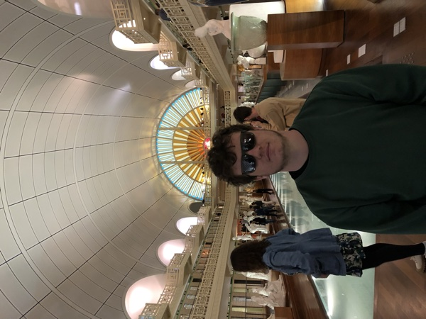

I am Rémi Dufloer, a second-year PhD student in Software Engineering at Inria Lille, within the SAILS team. My research focuses on software debugging, particularly on bugs that emerge across different software versions and how to better understand and address them. Beyond my research interests, I am particularly enthusiastic about human-centered research and empirical approaches. I enjoy working with people and exploring software engineering challenges through both qualitative and quantitative methods, whether through interviews, user studies, experiments, or data analysis. I strongly believe that understanding developers' experiences and practices is an important part of improving software engineering.
As I move forward in my PhD, I am already looking for postdoctoral opportunities to continue my academic journey and contribute to research in software engineering.
And, on a more personal note, I am also the proud dad of a (not-so-)little dog!